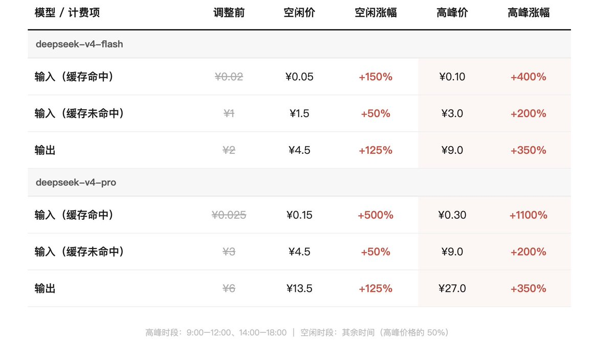

7月中旬A股调整，很多量化产品出现较大回撤。
幻方部分产品单周跌幅超过15%。
8月有报道称 DeepSeek 重启新一轮融资，目标融资约 80亿美元，目标估值约 740亿美元（约5000亿元人民币）。此前7月底融资曾暂停，随后重新推进。

幻方部分产品单周跌幅超过15%。
8月有报道称 DeepSeek 重启新一轮融资，目标融资约 80亿美元，目标估值约 740亿美元（约5000亿元人民币）。此前7月底融资曾暂停，随后重新推进。

Deepseek最新涨价方案
梁圣变成小难梁了 😡😡😡
deepseek-v4-flash 的输入缓存命中价格从 0.02 元涨至空闲 0.05 元、高峰 0.10 元，
涨幅分别为 150% 和 400%；
缓存未命中从 1 元涨至 1.5 元和 3.0 元，涨幅 50% 至 200%；
输出从 2 元涨至 4.5 元和 9.0 元，涨幅 125% 至 350%。
deepseek-v4-pro https://t.co/fNF7Cc8KK0 https://t.co/uTaY4iklSV
梁圣变成小难梁了 😡😡😡
deepseek-v4-flash 的输入缓存命中价格从 0.02 元涨至空闲 0.05 元、高峰 0.10 元，
涨幅分别为 150% 和 400%；
缓存未命中从 1 元涨至 1.5 元和 3.0 元，涨幅 50% 至 200%；
输出从 2 元涨至 4.5 元和 9.0 元，涨幅 125% 至 350%。
deepseek-v4-pro https://t.co/fNF7Cc8KK0 https://t.co/uTaY4iklSV